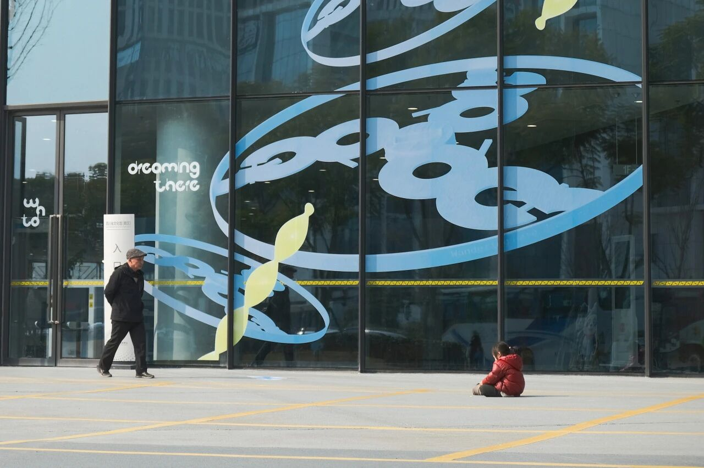
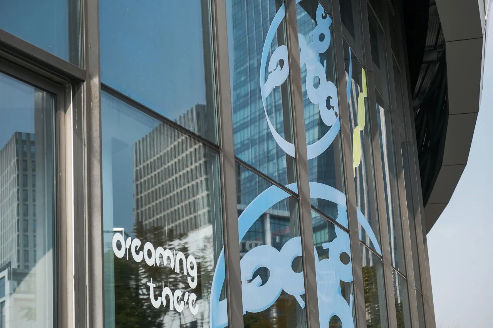
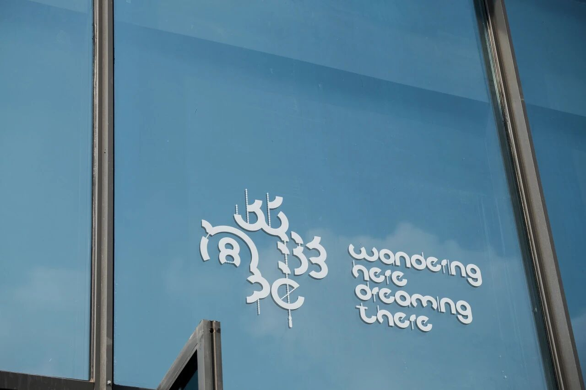

Wandering Here Dreaming There 此间神游 成都双年展平行展
Taking the free imagination and wandering of the mind embodied in “Wandering Here, Dreaming There” as its conceptual starting point, the design draws inspiration from the “Flying Fairy,” a familiar childhood toy, while reflecting Chengdu’s relaxed and easygoing urban atmosphere. The toy’s spinning ascent serves as a visual metaphor, translating physical flight and suspension into the free flow of thought and creating a light, fluid visual rhythm.
Drawing on the geometric form of the Flying Fairy’s rotor blades, the design develops a custom typographic system characterized by rotational forms, applied to both the Chinese logotype and the English slogan, “Wandering Here, Dreaming There.” The motion design extends this structural logic through typographic fragmentation and reassembly, combined with rotation, translation, and floating trajectories, transforming static letterforms into dynamic spatial elements.
Through a continuous translation from toy forms to typographic structures and motion language, the design integrates the playful experience of childhood memories with rational visual composition. This creates a cohesive visual system in which graphics, typography, and motion interact, responding to the exhibition’s theme through a light, open, and imaginative visual language.
以“神游”所蕴含的自由想象与精神漫游为概念起点，结合成都松弛、自在的城市气质，从童年记忆中的“飞天仙子”玩具汲取灵感。以其旋转升空的运动特征作为视觉隐喻，将物理层面的腾空与漂浮转译为思绪的自由流动，营造轻盈、自由的视觉节奏。
设计提取飞天仙子扇叶的几何形态，构建具有旋转特征的字体系统，并应用于中文标识及英文标语“Wandering Here, Dreaming There”。动态设计延续这一结构逻辑，通过字体的拆解与重组，结合旋转、位移及漂浮轨迹，使文字从静态符号转化为具有空间感的动态元素。
通过“玩具形态—字体结构—运动语言”的连续转译，将童年记忆中的趣味体验与理性的视觉构成相结合，形成图形、文字与动态相互呼应的视觉系统，以轻盈、开放的表达回应展览主题。
- Category
- Visual Identity
- Designer
- Chen Jiaqi，Wang YanYu
陈家琪，王延宇 - Client
- 四川省文化馆
- Year
- 2025



More Works
Otowotto
Θ=1/0
Gene Gallery
Lemaire
Soma APP
Circle
Monosci Font
24-960
A World On Paper
Golden Bell Laureates
Poetics Of Form
8th Annual Conference
Perceptual Bias
Behind The Mask
Natural Walk
Cruise Ship 72 Changes
Wandering Here Dre-
aming There
Grand Tour
META（PHYSICAL）FORM
K2 Track Art Museum
Double Art Festival
Songs Of Laber
Making Inbetween